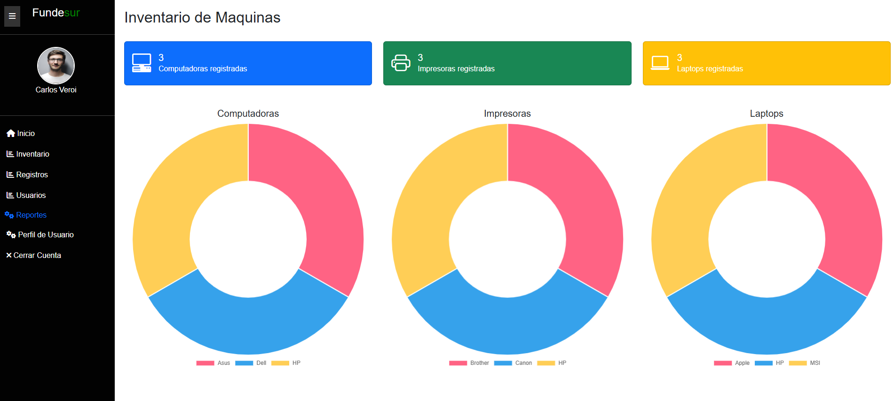
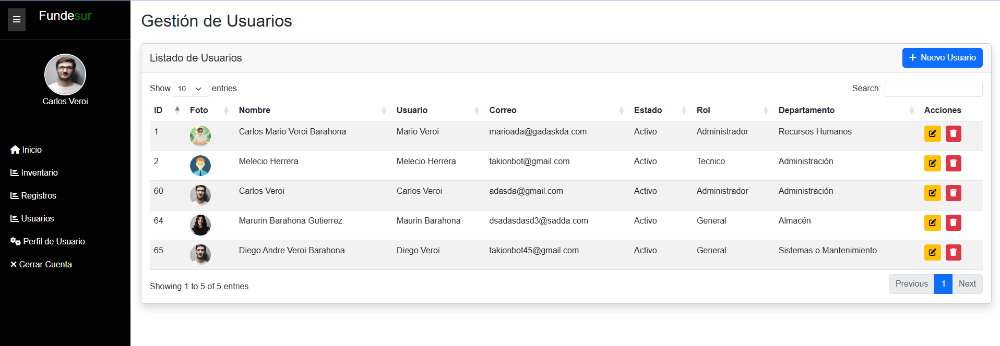
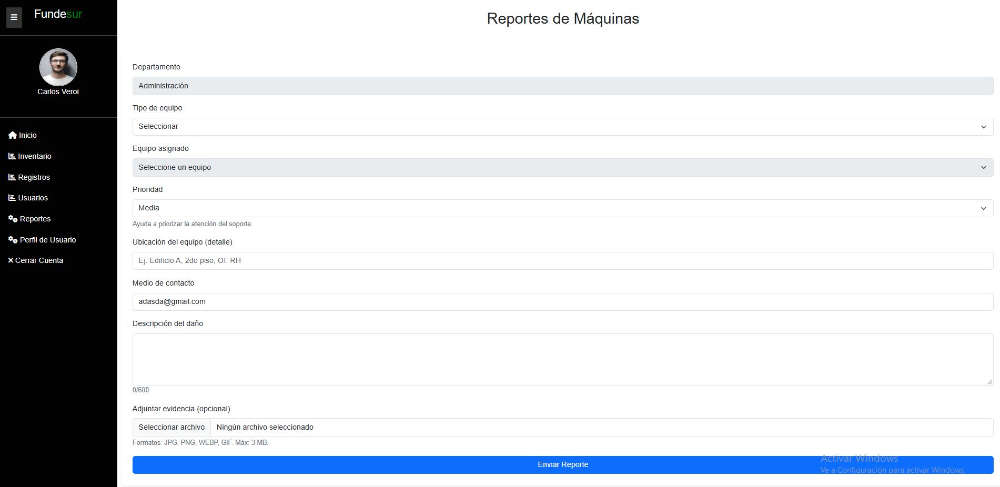
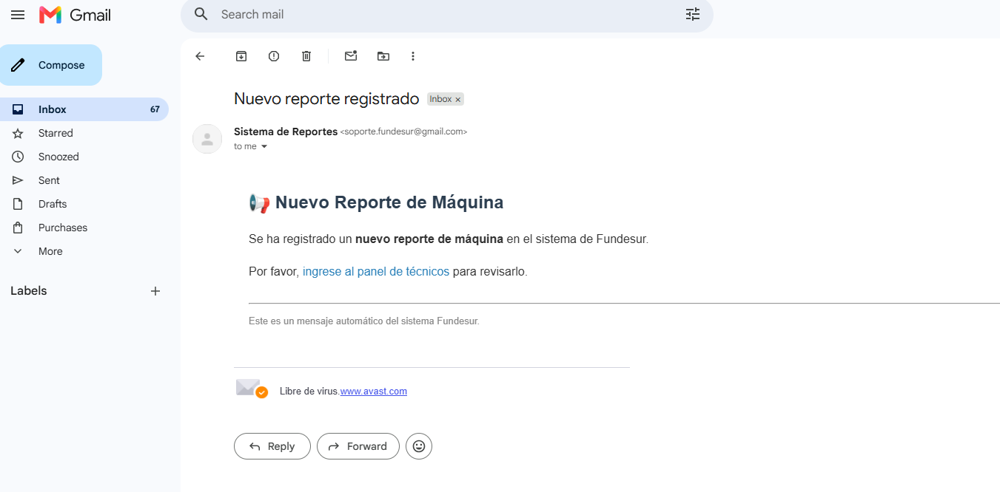
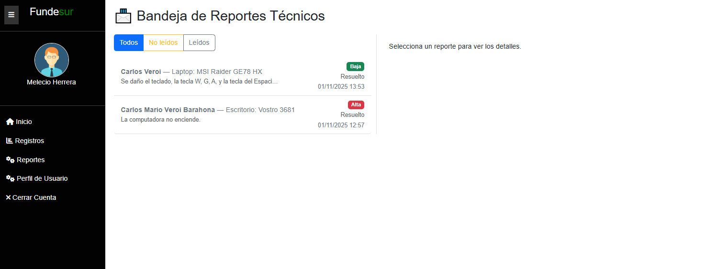

Sistema de Inventario de Equipos y Gestión de Soporte Técnico
Sistema web desarrollado durante mi práctica profesional en FUNDESUR para facilitar el control de los equipos de cómputo y la gestión de reportes de fallas técnicas.
Sobre el proyecto
El sistema permite mantener organizada la información relacionada con los equipos de cómputo de FUNDESUR y proporciona un mecanismo para que los usuarios puedan reportar problemas técnicos relacionados con sus equipos.

Control de equipos
El sistema permite registrar y consultar diferentes tipos de equipos, incluyendo computadoras de escritorio, laptops e impresoras.
Cada registro contiene información técnica y administrativa como marca, modelo, características del equipo, ubicación, responsable, proveedor, fecha de adquisición y garantía.

Gestión de usuarios
El sistema cuenta con administración de usuarios, permitiendo asociarlos con un departamento, estado y rol dentro de la aplicación.

Reporte de fallas
Los usuarios pueden reportar problemas relacionados con sus equipos. El formulario permite seleccionar el equipo, establecer la prioridad del reporte, indicar su ubicación, describir la falla y adjuntar evidencia.

Notificación automática
Cuando se registra un nuevo reporte, el sistema envía automáticamente una notificación por correo electrónico al técnico para informarle que existe una nueva incidencia pendiente de revisión.

Seguimiento técnico
El técnico dispone de una bandeja de reportes desde la cual puede consultar las incidencias recibidas, identificar su prioridad y realizar el seguimiento correspondiente.

Lo que aprendí
Este proyecto me permitió aplicar conocimientos de desarrollo web en una necesidad real, trabajando con bases de datos, gestión de usuarios, inventario, formularios, manejo de archivos y automatización de notificaciones por correo electrónico.